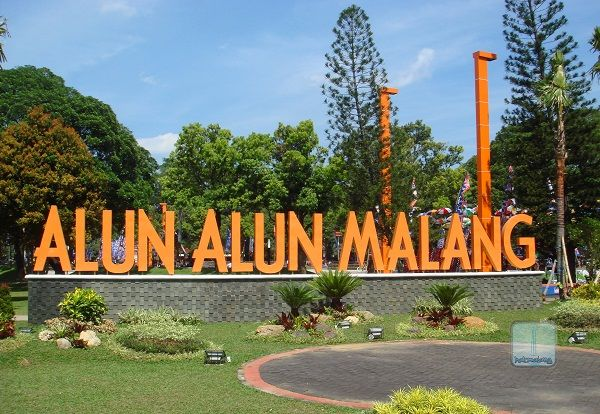
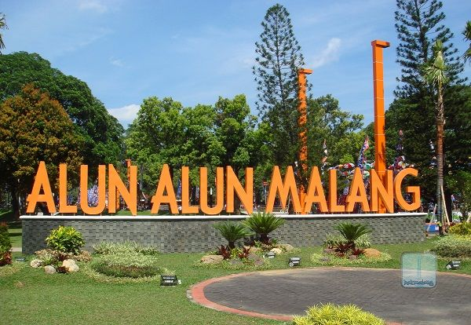
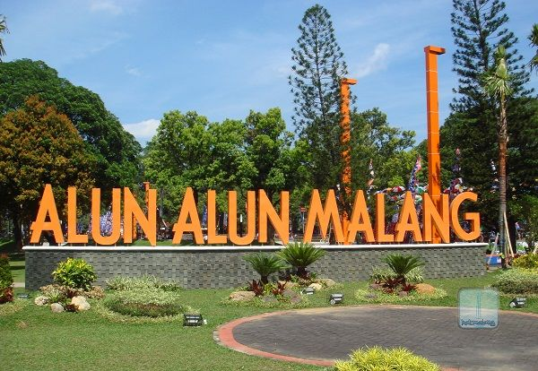

Kota Malang adalah kota pendidikan, wisata, dan kreatif di Jawa Timur yang terkenal dengan iklim sejuk dataran tinggi, julukan "Kota Apel" dan "Kota Bunga", serta suasana toleran yang dinamis, menjadi bagian dari Malang Raya bersama Batu dan Kabupaten Malang, serta memiliki sejarah panjang sejak era kolonial Belanda yang membentuknya menjadi pusat pertumbuhan ekonomi, perdagangan, dan pendidikan yang maju di Jawa Timur.
Tempat-tempat menarik yang dapat dikunjungi :
Gambar Kota Malang
